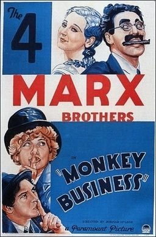

Monkey Business

Starring: Groucho Marx, Harpo Marx, Chico Marx
Director: Norman Z. McLeod
Writer: Ben Hecht
Producer: Herman J. Mankiewicz
Monkey Business is a 1931 American pre-Code comedy film. It is the third of the Marx Brothers' released movies (Groucho, Harpo, Chico and Zeppo), and the first with an original screenplay rather than an adaptation of one of their Broadway shows. The film also features Thelma Todd, Harry Woods, Ruth Hall and Rockliffe Fellowes. It is directed by Norman Z. McLeod with screenplay by S. J. Perelman and Will B. Johnstone.
Trivia
- Writers S. J. Perelman and Will B. Johnstone were excited to be working with the Marx Brothers.
- The final script was the result of five months of work by the brothers, gag writers, director Norman Z. MacLeod and Mankiewicz.
- MacLeod later said that up to 12 writers worked on the film, and that Eddie Cantor contributed when he visited the set during shooting.
Previous Showings
8 Runs • 2 Festivals
Original Billings: 1 run (October 6, 1931)
Original Run: October 6, 1931 (Tuesday - Thursday)
All runs on record (8):
- October 6, 1931 (Tuesday - Thursday)Marx Brothers
- February 11, 1988w/ Duck Soup
- April 18 - 19, 1990w/ Horse Feathers
- June 17 - 18, 1993w/ The Cocoanuts
- September 20 - 22, 1996w/ The Cocoanuts
- March 4 - 6, 2005w/ Christmas in July
- November 28 - December 1, 2013Preston Sturges and The Marx Brosw/ The Lady Eve
- December 16 - 18, 2016Astaire and Rogers plus The Marx Brothersw/ Shall We Dance